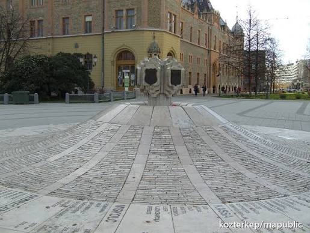
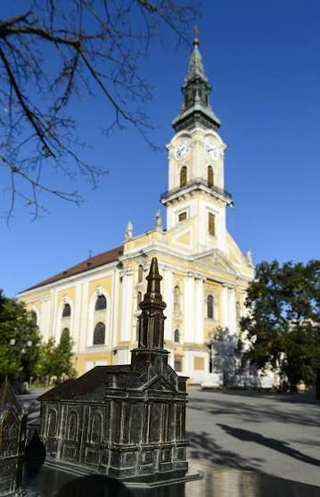
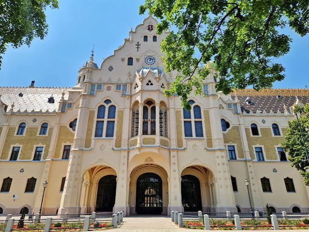
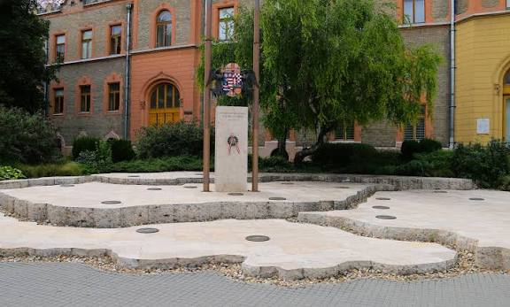

Ebben a játékban Kecskemét belvárosát fedezitek fel egy izgalmas küldetés során. Több állomást kell végigjárnotok, és minden helyszínen egy feladat vár rátok.
Figyeljetek a részletekre, használjátok a megfigyelőképességeteket, és dolgozzatok együtt!
⚠️ Fontos: csak akkor léphettek tovább a következő állomásra, ha helyesen válaszoltok!
🎯 Minden helyes válasz után kaptok egy betűt. Ezekből a végén összeáll a titkos szó.
1 / 10
1. állomás
A Katona József Könyvtár előtt található egy könyvet ábrázoló szobor. Ha hátulról a borítók közé néztek, a szemközti templom egy szobrát láthatjátok. Ez a szobor egy utcán található táblát néz. Nézzétek meg a tábla hátulját! Melyik híres magyar író nevét találjátok ott?
2. állomás
Luca szobránál jártok. A hely tele van különböző állatokkal. Az alábbiak közül mely állatok NINCSENEK a szobor körül? kígyó, gyík, csiga, teknős, holló, mókus, hangya, rák, sün

3. állomás
A város főterén található a 0 km kő (más néven: Címerdomb), amely a város címerállatát mutatja. Ez a címer egy híres 18. századi költőnk szülőhelyével van egy vonalban. Ki ez a költő?

4. állomás
A Nagytemplom mögött található Szent István szobortól induljatok el délkeleti irányba, és tegyetek meg körülbelül 25 lépést! Egy kör alakú márvány emléklaphoz fogtok érni. Álljatok rá, és tapsoljatok hármat! Mi történik?

5. állomás
A Városházánál két költőnk (írónk) emlékhelye is megtalálható. Írjatok 1–1 művet mindkét szerzőtől, amelyet ezek az emlékhelyek megemlítenek!

6. állomás
Menjetek el a Trianon-emlékműhöz! Álljatok rá a „Hírös város” táblájára, majd arra a városra, amely 380 km-re van tőle! Kössétek össze a két pontot egy képzeletbeli vonallal, majd húzzátok tovább ezt a vonalat! Ha jó irányba tartotok, egy emléktáblához értek. Hányadik század végét említi a tábla? A választ arab számmal adjátok meg!
7. állomás
Járjátok körbe a Katona József Színházat! Találtok ott egy helyet, ahol egy kis fülkében megpihenhettek. Ha eleget töprengtek ott, rájöhettek: Ki van a színházban?
8. állomás
A Kéttemplom közben található a Művészetek kútja. Az alábbiak közül melyik személy NEM szerepel rajta?
9. állomás
A Református templom mellett álljatok úgy, hogy Kodály Zoltán nézzen le rátok! Ezután forduljatok meg, és nézzetek körül! Hány órát tudtok megszámolni?
10. állomás
A Kelemen László Kamaraszínháznál egy Madách Imre idézetet találtok. Az idézetből egy betű hiányzik. Melyik betű az?